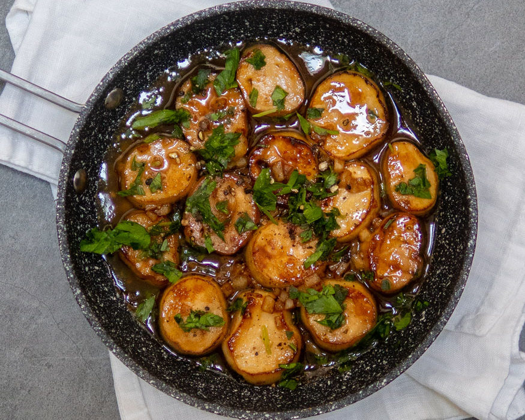

Vegan Scallops in Garlic Butter Sauce

Description
Today I’m showing you how to make an easy vegan scallops recipe to impress vegan and non-vegan guests, or just cook them up for yourself for a fabulous dinner for one.
This bite-sized appetizer has a delicate texture similar to a sea scallop and when marinated, they take on a full flavour that welcomes a fresh lemon sauce.
Ingredients
For the scallops
- 6 large king oyster mushrooms, sliced 1-inch thick
- 1 cup vegetable broth, hot
- 2 tbsp white miso
- 1 tbsp soy sauce or gluten-free tamari
- 1-1/2 tsp seaweed or kelp granules
- 1 tbsp olive oil
For the lemon butter sauce
- 3 tbsp vegan butter
- 2 garlic cloves, minced
- 1 lemon, juiced
- Sea salt and black pepper, to taste
- 2 tbsp chopped fresh parsley
For frying
- vegetable oil, safe for frying
Steps
- With a vegetable brush, remove any dirt or debris from mushrooms and slice off the woody ends and mushrooms caps. Save the caps to use for another recipe like a stirfry.
- Slice the stems into 1 inch (2.5 cm) long pieces.
- In a large mixing bowl or Tupperware, whisk together hot vegetable broth, white miso, soy sauce or gluten-free tamari, kelp, and olive oil. Whisk until the miso has dissolved in the hot broth.
- Add the mushrooms and marinate for 15 mins to 2 hrs. Overnight is preferred.
- After your mushrooms have marinated, melt 1 tbsp vegan butter in a large skillet over medium-high heat.
- Working in batches, place marinated mushrooms, flat side down, and brown for 6-8 mins on each side. Set aside and keep warm.
- You can save time by making the garlic butter sauce in a seperate pan at the same time as frying the mushrooms, or save on dishes by using the same pan once all your mushrooms have cooked and are set aside.
- To make the garlic butter sauce, melt 2 tbsp vegan butter in the same skillet.
- Add garlic and cook, stirring frequently for 1 minute, or until fragrant.
- Stir in the lemon juice; season with salt and pepper, to taste.
- Serve mushroom scallops in a bowl or serving dish and pour the garlic butter sauce.
- Garnish with parsley.
- Enjoy as appetizer or add to a vegan creamy pasta dish